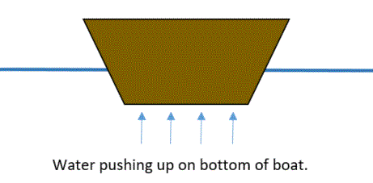
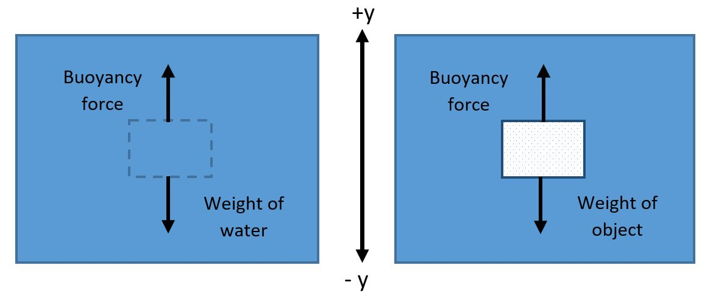
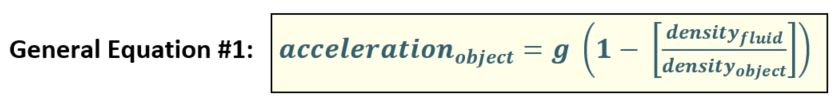
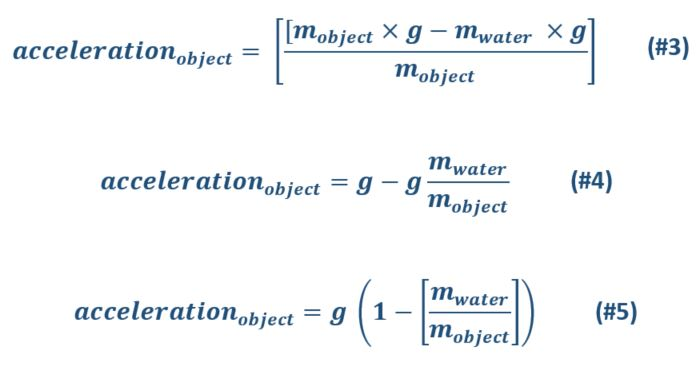
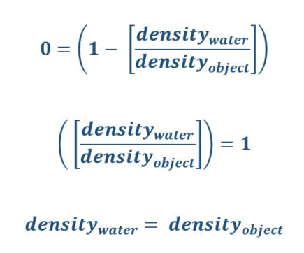

What is the buoyancy force? You have probably noticed that some objects sink in water and other objects float. We say that objects that float are “buoyant." Why do some objects sink while others float? The answer has to do with the upward force of water acting on objects in the water, called the "buoyancy" force.
Summary of buoyancy force: when objects float versus sink
In a nutshell, the buoyancy force acting on an object in water is caused by the water molecules moving around and bumping into and pushing on the object. This water pressure causes an upward force on the object. This idea is shown in the picture below.
Applying Newton's Second Law, when the force of water pushing up on the boat is equal to the weight of the boat, the boat will float on the water. When the weight of the boat is greater than the force of water pushing up on the boat, the boat will sink. (If the force of the water pushing up on the boat is greater than the weight of the boat, the boat will rise up in the water until the forces balance out. The boat will then float on the water.)
Using Newton's Second law, we can also predict if something sinks or floats based on whether it is more or less dense than water. The density of water is about 1 gram/cm3. We can figure out the density of the object by dividing its mass by its volume.
In the case of the boat above, the density of the boat is less than the density of water (1 gram/cm3). So, it floats!
Conceptual explanation of buoyancy force. To understand the buoyancy force, we need to remember that water molecules in a liquid state are kind of like slippery marbles that slither around each other. But the water molecules can't get much closer to each other. So we can think of water as a solid to understand buoyancy.
The important thing to remember is that as we go deeper below the surface of water, the water pressure increases. This means that the water pushes harder (in all directions) the deeper you go under water. The reason for this is just that there is more weight of water to hold up the deeper we go. If somehow there was no water below a certain depth and you had to hold up the water above it, you'd need to push up harder when there is more water above you. This is shown below.
This means that the water is also pushing down on you more when the water is deeper (due to Newton's Third Law ). Water molecules are pushing harder in every direction the deeper the water is!
So, when you put, for example, a cube-shaped object in water, the moving water molecules will push on the object from all sides. But the pressure on the sides of the object cancels out. For example, the amount of pressure on the left side of the object is equal to the amount of pressure on the right side of the object.
But the pressures from the water on the top and bottom sides of the cube are not equal. There is more pressure on the bottom of the cube than on the top of the cube. Because of this difference in pressure, the total or “net” pressure from the water molecules is upward.
This upward pressure on the object causes the upward force we call the “buoyancy” force. The buoyancy force is caused by pressure from the surrounding water molecules, which results in an upward force on an object in water.
The strength of the UPWARD buoyancy force on an object in water is equal to the weight of the water that the object displaced.
Why is the upward buoyancy force equal to the weight of the volume of water displaced by the object? In the picture above, the dotted lines indicate the volume of water that will be taken up by—or displaced by—the object. Because that segment of water is not accelerating up or down, the downward force of gravity on that segment of water is equal to the upward buoyancy force. Now, when that volume of water is displaced by an object, the water molecules still behave the same way, and will exert the same upward pressure/force on that object. So, the upward buoyancy force on the object remains the same, equal to the weight of the water displaced by the object.
The strength of the UPWARD buoyancy force on an object in water is equal to the weight of the water that the object displaced. Like all motion, according to Newton's Second Law , the net force on an object in a given direction (in this case, the vertical direction or up/down) will determine the motion (i.e., acceleration) of the object:
In summary, for objects submerged in water:
For objects initially placed at the surface of the water:
Hint: The densities of various materials (including water) are given here in the Density unit.
Mathematical summary of buoyancy force: When an object will rise vs. sink in water
The equation for the initial acceleration of an object initially at rest in water only depends on the density of the object. This equation** is shown below, where "g" is the acceleration due to gravity (about 10 m/s2 downward on Earth). In this equation, a positive value for acceleration means that the object is rising upward in the water, and a negative value means that the object is accelerating downward in the water.
Once the object starts moving in the water, a drag force from the water also acts on the object (click here for more information about drag forces, including the effect of an object's shape on the drag force). But we will keep it simple in this unit and ignore that force.
Whether the object accelerates upward or downward depends on the ratio of the density of water to the density of the object. If this ratio is greater than 1 (or the density of water is greater than the density of the object), the acceleration will be upward (positive). If the ratio of the density of water to the density of the object is less than one (or the density of the object is greater than the density of water), the acceleration of the object will be downward (negative).
To summarize Equation #1:
If the object is less dense than water, it will have a positive acceleration. This means that is will initially accelerate upward (and rise in the water):
If: the density of the object < the density of water: the object will rise in water.
If the object is more dense than water, it will have a negative acceleration. This means that it will initially accelerate downward (and sink):
If: the density of the object > the density of water: the object will sink in the water.
Mathematical summary of buoyancy force: When an object will rise vs. sink in any fluid
This equation is true for any fluid (not just water). The general form of this equation is shown below:
For any object to initially accelerate upward (and float) in any fluid, it must be less dense than the fluid:
If: the density of the object < the density of the fluid: the object accelerates upward in the fluid
And for any object to initially accelerate downward (and sink) in any fluid, it must be more dense than the fluid:
If: the density of the object > the density of the fluid: the object accelerates downward in the fluid
In general, the initial downward acceleration of an object in water increases as the object's density increases.
Equation #1 also tells us that as the density of the water (or whatever fluid the object is in) increases, the initial downward acceleration of the object DEcreases.
((Advanced section due to math))
When do objects sink vs. float? In this section, we will apply Newton's Second Law (NSL) to find out when objects will sink vs. rise in water. We will use NSL to calculate the initial acceleration of an object initially at rest in the vertical (or y) direction, when only the forces of gravity and an upward buoyancy force act on the object.
OK. Let’s apply Newton’s Second Law for the object in water in the vertical direction:
As shown in the picture below, there are two forces acting on the object:
Note: It is very important to be careful about signs in your equations! If you are not careful, the equations will not be accurate!
Replacing "Net force" with the forces of weight and buoyancy (above), we have:
Dividing both sides of the equation by the mass of the object, we get:
The densities of various material are known and can be looked up (e.g., see the density table in the Density unit). The density of objects does not depend on the object’s size, and it is easier to look up the densities of materials than to weigh the objects and calculate their masses! So, we will substitute masses in the equations above with densities.
The mass of an object is equal to the density of the object times its volume:
So, we can re-write the equation (#5) in terms of density and volume:
We know that the volume of displaced water is equal to the volume of the object. So, the volume terms cancel out:
(As a reminder, this is the initial acceleration of an object initially at rest in water. Only the downward force of gravity and an upward buoyancy force act on the object at first.)
If the initial acceleration of the object is zero, it does not accelerate downward or upward. This happens when the density of the object is equal to the density of the water:
Dividing both sides of the equation by g (which removes g from the equation),
So, if:density (object) = density (water), then the Object neither floats nor sinks (its acceleration = 0)
We can generalize Equation #1 to the initial acceleration of an object in any type of surrounding fluid (including air):
((End of Advanced section))


***Note for Teachers: You can access more information about this website and find other resources for science inquiry on the ISP Tutor website.
©2021 Klahr Lab, Carnegie Mellon University. All Rights Reserved
Carnegie Mellon University | Dept. of Psychology | 5000 Forbes Ave. | Pittsburgh, PA 15213 The TED project was funded in part by the Institute of Education Science (IES), Grant R305H060034, and in part by the National Science Foundation, Grant SBE035442. The ISP Tutor project is funded by IES, Grant R305A170176.
The research reported here was supported by the Institute of Education Sciences, U.S. Department of Education, through Grant R305A170176 to Carnegie Mellon University. The opinions expressed are those of the authors and do not represent views of the Institute or the U.S. Department of Education.
{kind=link}